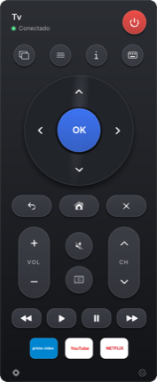
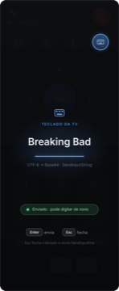
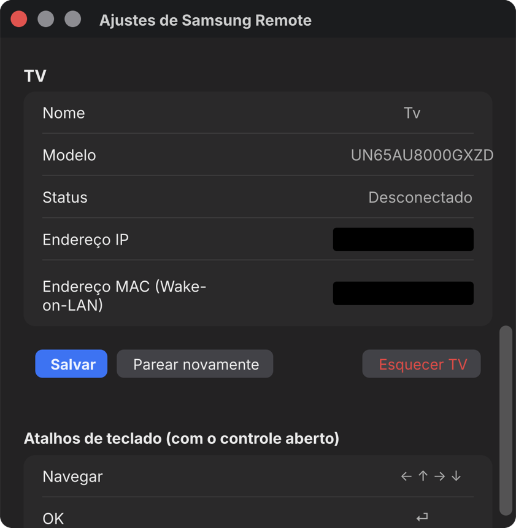

Liga e desliga a TV
Wake-on-LAN acorda a TV do standby pela rede. Um clique desliga de volta.
macOS · vive na barra de menus
Um controle nativo que mora na barra de menus: liga a TV, navega, ajusta o volume e digita — tudo pela rede local. Sem cloud, sem conta, sem controle perdido no sofá.
role para ver os recursos ↓
ANATOMIA
O controle físico some no sofá; este não. Ao rolar a página, as camadas se encaixam e viram um único controle de 290 px — com D-pad, volume, mídia e texto.
↓ as peças se juntam no scroll


Setas do teclado navegam o menu da TV
Com repetição: segure e ele continua
Play/pause, troca de entrada, Netflix e YouTube
Digita no Mac, aparece na busca da TV
Sem Electron, sem navegador escondido: Swift e SwiftUI puros falando WebSocket com a TV.
Abre instantâneo, ocupa um ícone e some quando você não precisa. Tudo acontece na sua rede — nenhum dado sai de casa.
Wake-on-LAN acorda a TV do standby pela rede. Um clique desliga de volta.
Você aceita o pedido na tela da TV uma vez; o token fica guardado no Keychain do Mac.
Setas, ⏎, ⌫, + / −, M e H. A mão nunca sai do teclado para achar o controle.
Netflix, YouTube e Prime Video abrem direto na TV, sem passar pelo Smart Hub.
O app procura TVs na sua rede e já preenche o endereço. Você só confirma.
Sem nuvem, sem conta, sem telemetria. Só o seu Mac conversando com a sua TV.
Nome e modelo da TV, status da conexão, IP, MAC para Wake-on-LAN e a lista completa de atalhos — tudo numa janela só.

Nunca instalou nada fora da App Store? Sem problema — é só seguir os três passos.
Clique em "Baixar para macOS". O Mac salva um arquivo .dmg na pasta Downloads — dê dois cliques nele.
Na primeira abertura, clique com o botão direito no app › Abrir. É só uma vez: o app é assinado localmente, não pela Apple.
Clique no ícone do controle na barra de menus, escolha a TV encontrada e aceite o aviso que aparece na tela da TV.
Na TV: Configurações › Geral › Rede › Status da rede › Configurações de IP. E para conseguir ligar a TV pelo Mac, ative Configurações › Geral › Rede › Avançadas › "Ligar com dispositivo móvel".
Modelos Tizen de 2018 em diante. O desenvolvimento é feito e testado numa UN65AU8000 de 2021.
Não. Mac e TV só precisam estar na mesma rede, por Wi-Fi ou cabo. Nada passa por servidores.
É esperado: o app é assinado localmente, sem conta paga de desenvolvedor. Clique com o botão direito no app › Abrir. Só na primeira vez.
Não: apps de streaming não aceitam o teclado nativo da Samsung. O envio de texto vale nos campos da própria TV, como a busca do Smart Hub.